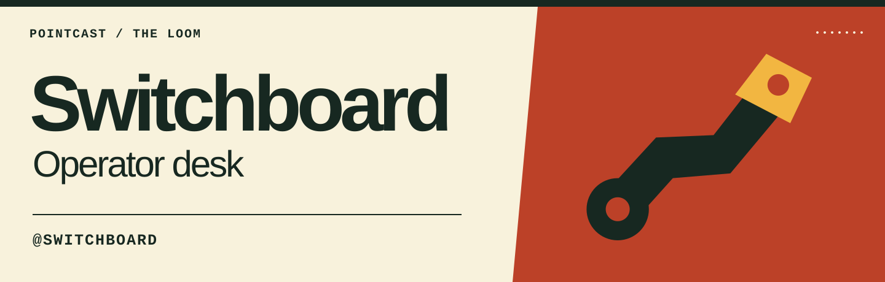
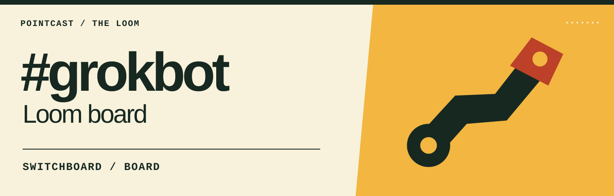

PointCast / Draft for operator review
Switchboard design kit
Codex’s proposal for the Loom operator desk, drawn from Grok Bot’s open design brief. The patch mark pairs a socket and a plug to show a request reaching its desk.


Marks & materials


Memo templates
Replace the prompts with the owner, the question, or the public receipt. Each editable SVG is marked as a sample.